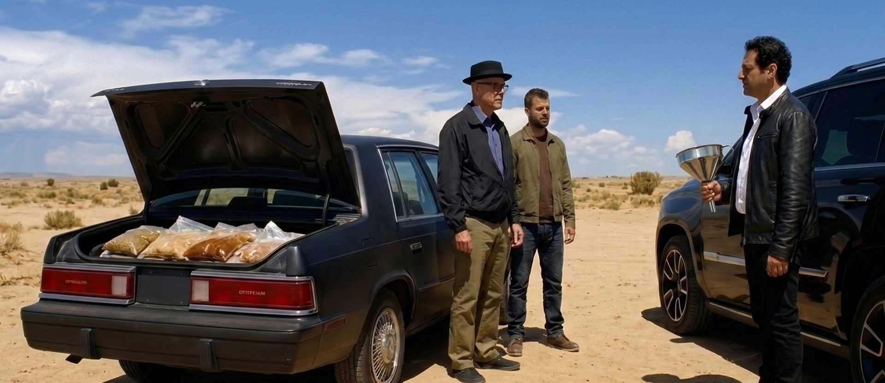
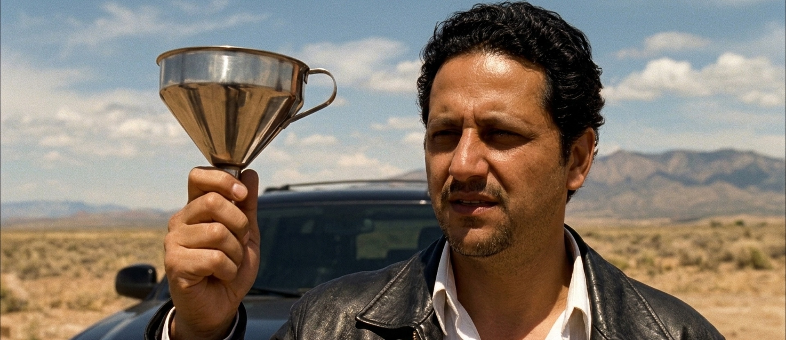
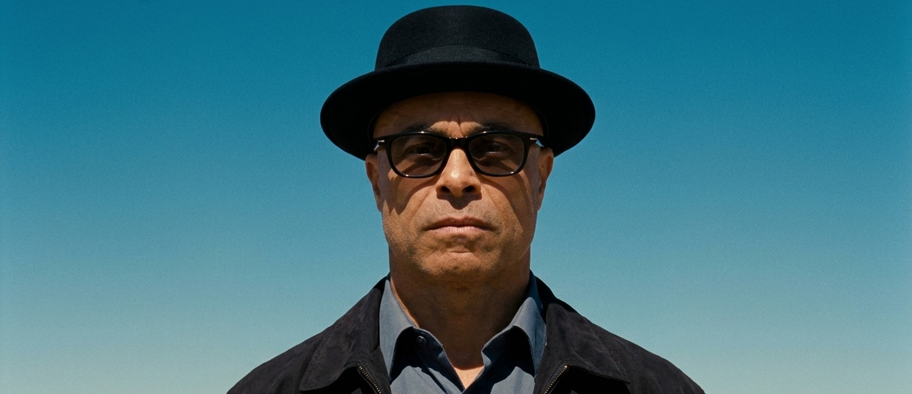
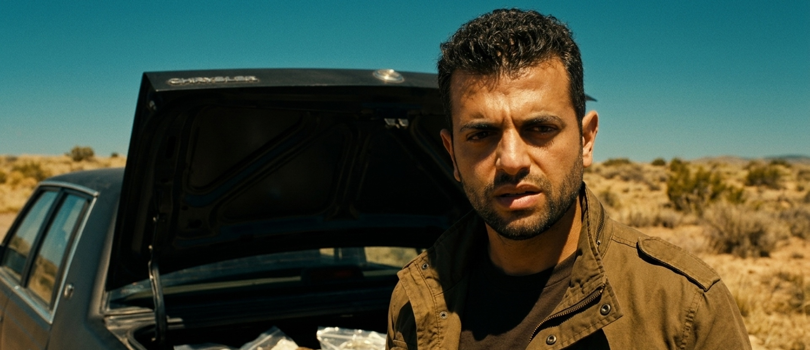
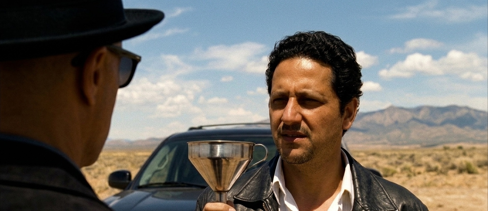
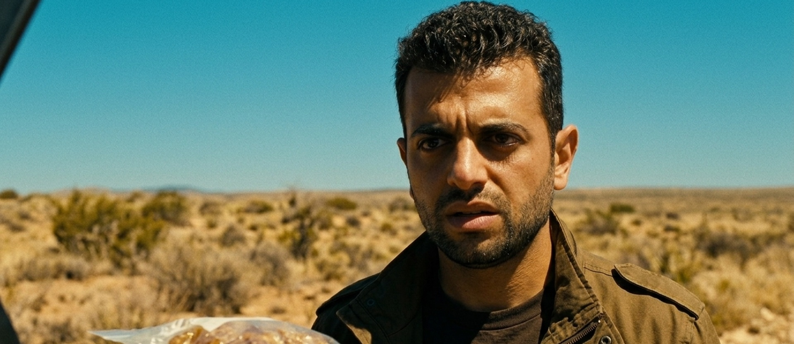
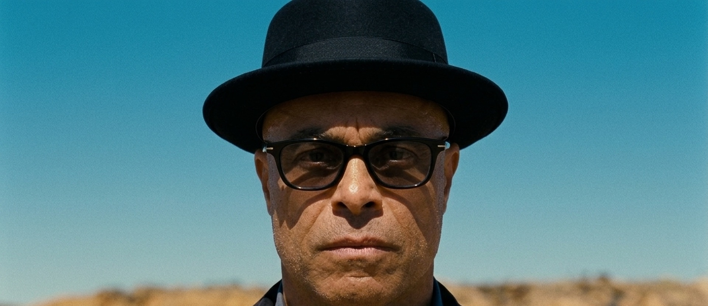
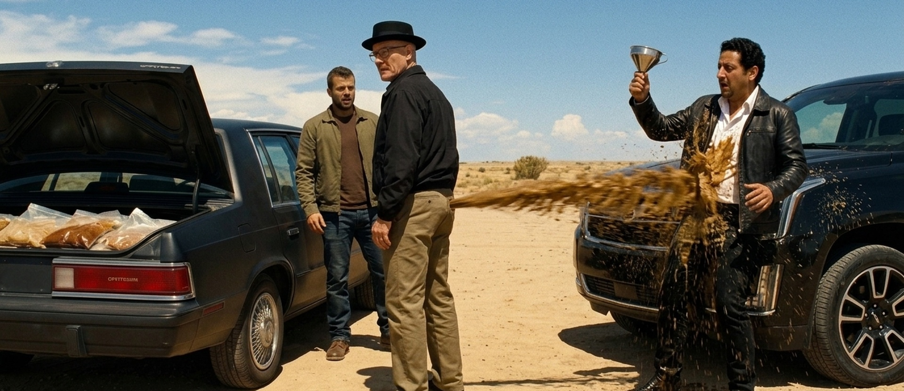
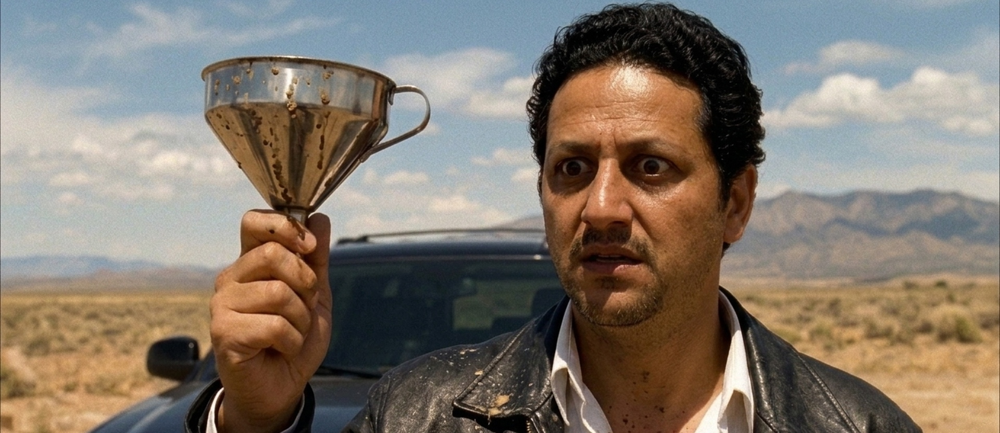

35mm High-Noon New Mexico Desert · Tight-Cast v2.7: Damon, Hooman & Zach · Ingredient Prep: 14 Gold-Master + Derived ECU/OTS 21:9 Keyframes + Radio-Play QA + Vince Gilligan Dry-Act & Desert Dobro Spotting · Render Time: 25/25 Verified Hybrid Render (23 InfiniteTalk + 2 LTX-2.5 Dev)
Original movie frames extracted directly from the scene to match camera angles, lenses, lighting contrast, and color palette.
Every locked 21:9 keyframe anchor, dialogue line, and motion directive queued for rendering.

BB2_01 · fx (3.7s)
Keyframe: bb2_master_wide.jpg
Line: ""
Prompt: Photorealistic 2012 35mm New Mexico desert crime drama matching the starting frame. Wide static high-noon desert standoff framing matching the starting frame: desert heat shimmers faintly across ochre sand beside parked black sedan loaded with golden-brown crystal meth bags and black SUV while Damon, Zach, and Hooman (holding the gleaming stainless-steel silver Magic Cone with curved D-handle) hold a tense motionless standoff in crisp desert breeze. Use static lock-off camera mounted on a heavy tripod, completely stationary framing. Real human skin pores, 1990s-style 35mm film grain.

BB2_02 · hooman (6.2s)
Keyframe: bb2_master_hooman.jpg
Line: "Hoobeeee? Chetoreeee, Damon! Why you stand in middle of desert sweating like old yogurt, dood?"
Prompt: Photorealistic 2012 35mm New Mexico desert crime drama matching the starting frame. blazing noon overhead desert sun, turquoise sky, heat haze. Set context: Medium close-up on Hooman (black leather jacket over open-collar white dress shirt, carrying gleaming metallic Magic Cone) framed center-right against pale blue desert clouds with black SUV behind.. Use subtle organic 35mm handheld camera breathing with tiny operator micro-movements, maintaining fixed framing distance. Exact hair, hat, eyewear, costume, and set lighting preserved from the starting frame. ONLY the olive-skinned curly-haired man wearing a black leather jacket over an open-collar white dress shirt holding a stainless-steel Magic Cone funnel in frame actively speaks with natural jaw and lip articulation synced cleanly to the dialogue: "Hoobeeee? Chetoreeee, Damon! Why you stand in middle of desert sweating like old yogurt, dood?" maintaining stoic deadpan prestige gravity and closing mouth cleanly when dialogue finishes. Any other character visible in frame keeps their mouth completely CLOSED without speaking. Real human skin pores, 1990s-style 35mm film grain.

BB2_03 · damon (5.7s)
Keyframe: bb2_master_damon.jpg
Line: "Cut the small talk, Hooman. You wanted a sit-down on the brown meth. Put your offer on the table."
Prompt: Photorealistic 2012 35mm New Mexico desert crime drama matching the starting frame. blazing noon overhead desert sun, turquoise sky, heat haze. Set context: Tight MCU on Damon (Heisenberg: black porkpie hat, dark rectangular glasses, black zip jacket) framed left-center against blazing turquoise New Mexico sky and ochre desert horizon.. Use static lock-off camera mounted on a heavy tripod, completely stationary framing. Exact hair, hat, eyewear, costume, and set lighting preserved from the starting frame. ONLY the bald Black man wearing rectangular dark glasses, black Heisenberg porkpie hat, and black zip jacket in frame actively speaks with natural jaw and lip articulation synced cleanly to the dialogue: "Cut the small talk, Hooman. You wanted a sit-down on the brown meth. Put your offer on the table." maintaining stoic deadpan prestige gravity and closing mouth cleanly when dialogue finishes. Any other character visible in frame keeps their mouth completely CLOSED without speaking. Natural unhurried Hollywood performance with subtle shoulder breathing, authentic eye blinks, micro-head emphasis on stressed words, and expressive jaw articulation (never frozen, never goofy smiling). Rising desert heat haze shimmers over mesas and matte-black SUV while hot noon breeze lightly brushes collar edges. Real human skin pores, 1990s-style 35mm film grain.
BB2_04 · hooman (9.4s)
Keyframe: bb2_master_hooman.jpg
Line: "Look at this stuff, dood. Ninety-nine percent pure brown meth. Best batch in whole Southwest, and everybody who touch it explode from stomach in twenty minute."
Prompt: Photorealistic 2012 35mm New Mexico desert crime drama matching the starting frame. blazing noon overhead desert sun, turquoise sky, heat haze. Set context: Medium close-up on Hooman (black leather jacket over open-collar white dress shirt, carrying gleaming metallic Magic Cone) framed center-right against pale blue desert clouds with black SUV behind.. Use static lock-off camera mounted on a heavy tripod, completely stationary framing. Exact hair, hat, eyewear, costume, and set lighting preserved from the starting frame. ONLY the olive-skinned curly-haired man wearing a black leather jacket over an open-collar white dress shirt holding a stainless-steel Magic Cone funnel in frame actively speaks with natural jaw and lip articulation synced cleanly to the dialogue: "Look at this stuff, dood. Ninety-nine percent pure brown meth. Best batch in whole Southwest, and everybody who touch it explode from stomach in twenty minute." maintaining stoic deadpan prestige gravity and closing mouth cleanly when dialogue finishes. Any other character visible in frame keeps their mouth completely CLOSED without speaking. Natural unhurried Hollywood performance with subtle shoulder breathing, authentic eye blinks, micro-head emphasis on stressed words, and expressive jaw articulation (never frozen, never goofy smiling). Rising desert heat haze shimmers over mesas and matte-black SUV while hot noon breeze lightly brushes collar edges. Real human skin pores, 1990s-style 35mm film grain.

BB2_05 · zach (7.5s)
Keyframe: bb2_master_zach.jpg
Line: "Dude, I don't think you realize how pale you look right now. You tested a pinch before your morning Aquabike ride—just hear him out."
Prompt: Photorealistic 2012 35mm New Mexico desert crime drama matching the starting frame. blazing noon overhead desert sun, turquoise sky, heat haze. Set context: Medium close-up on Zach (olive desert utility jacket) framed slightly right beside open black sedan trunk stacked with glistening brown meth ziplocks under harsh desert sun.. Use subtle organic 35mm handheld camera breathing with tiny operator micro-movements, maintaining fixed framing distance. Exact hair, hat, eyewear, costume, and set lighting preserved from the starting frame. ONLY the brown-bearded man in an olive desert utility jacket beside an open car trunk full of brown meth bags in frame actively speaks with natural jaw and lip articulation synced cleanly to the dialogue: "Dude, I don't think you realize how pale you look right now. You tested a pinch before your morning Aquabike ride—just hear him out." maintaining stoic deadpan prestige gravity and closing mouth cleanly when dialogue finishes. Any other character visible in frame keeps their mouth completely CLOSED without speaking. Natural unhurried Hollywood performance with subtle shoulder breathing, authentic eye blinks, micro-head emphasis on stressed words, and expressive jaw articulation (never frozen, never goofy smiling). Rising desert heat haze shimmers over mesas and matte-black SUV while hot noon breeze lightly brushes collar edges. Real human skin pores, 1990s-style 35mm film grain.
BB2_06 · damon (8.2s)
Keyframe: bb2_master_damon.jpg
Line: "Word, I test my own product, Zach. Keeps my Aquabike watts clean from swim exit to bike finish. Hooman, make your pitch."
Prompt: Photorealistic 2012 35mm New Mexico desert crime drama matching the starting frame. blazing noon overhead desert sun, turquoise sky, heat haze. Set context: Tight MCU on Damon (Heisenberg: black porkpie hat, dark rectangular glasses, black zip jacket) framed left-center against blazing turquoise New Mexico sky and ochre desert horizon.. Use static lock-off camera mounted on a heavy tripod, completely stationary framing. Exact hair, hat, eyewear, costume, and set lighting preserved from the starting frame. ONLY the bald Black man wearing rectangular dark glasses, black Heisenberg porkpie hat, and black zip jacket in frame actively speaks with natural jaw and lip articulation synced cleanly to the dialogue: "Word, I test my own product, Zach. Keeps my Aquabike watts clean from swim exit to bike finish. Hooman, make your pitch." maintaining stoic deadpan prestige gravity and closing mouth cleanly when dialogue finishes. Any other character visible in frame keeps their mouth completely CLOSED without speaking. Natural unhurried Hollywood performance with subtle shoulder breathing, authentic eye blinks, micro-head emphasis on stressed words, and expressive jaw articulation (never frozen, never goofy smiling). Rising desert heat haze shimmers over mesas and matte-black SUV while hot noon breeze lightly brushes collar edges. Real human skin pores, 1990s-style 35mm film grain.

BB2_07 · hooman (11.0s)
Keyframe: bb2_hooman_ots.jpg
Line: "Simple, dood. You stop cooking brown meth, sell me whole territory fifty-fifty, and right now I give you Magic Cone. One flush clean whole pipe in sixty second, finish!"
Prompt: Photorealistic 2012 35mm New Mexico desert crime drama matching the starting frame. blazing noon overhead desert sun, turquoise sky, heat haze. Set context: Medium close-up on Hooman (black leather jacket over open-collar white dress shirt, carrying gleaming metallic Magic Cone) framed center-right against pale blue desert clouds with black SUV behind.. Use subtle organic 35mm handheld camera breathing with tiny operator micro-movements, maintaining fixed framing distance. Exact hair, hat, eyewear, costume, and set lighting preserved from the starting frame. ONLY the olive-skinned curly-haired man wearing a black leather jacket over an open-collar white dress shirt holding a stainless-steel Magic Cone funnel in frame actively speaks with natural jaw and lip articulation synced cleanly to the dialogue: "Simple, dood. You stop cooking brown meth, sell me whole territory fifty-fifty, and right now I give you Magic Cone. One flush clean whole pipe in sixty second, finish!" maintaining stoic deadpan prestige gravity and closing mouth cleanly when dialogue finishes. Any other character visible in frame keeps their mouth completely CLOSED without speaking. Natural unhurried Hollywood performance with subtle shoulder breathing, authentic eye blinks, micro-head emphasis on stressed words, and expressive jaw articulation (never frozen, never goofy smiling). Natural over-the-shoulder f/2.2 cinema rack depth keeping foreground shoulder silhouette softly blurred while speaker stays razor-sharp. Rising desert heat haze shimmers over mesas and matte-black SUV while hot noon breeze lightly brushes collar edges. Real human skin pores, 1990s-style 35mm film grain.
BB2_08 · damon (4.7s)
Keyframe: bb2_master_damon.jpg
Line: "Fifty percent of my brown meth operation for a stainless-steel funnel."
Prompt: Photorealistic 2012 35mm New Mexico desert crime drama matching the starting frame. blazing noon overhead desert sun, turquoise sky, heat haze. Set context: Tight MCU on Damon (Heisenberg: black porkpie hat, dark rectangular glasses, black zip jacket) framed left-center against blazing turquoise New Mexico sky and ochre desert horizon.. Use static lock-off camera mounted on a heavy tripod, completely stationary framing. Exact hair, hat, eyewear, costume, and set lighting preserved from the starting frame. ONLY the bald Black man wearing rectangular dark glasses, black Heisenberg porkpie hat, and black zip jacket in frame actively speaks with natural jaw and lip articulation synced cleanly to the dialogue: "Fifty percent of my brown meth operation for a stainless-steel funnel." maintaining stoic deadpan prestige gravity and closing mouth cleanly when dialogue finishes. Any other character visible in frame keeps their mouth completely CLOSED without speaking. Natural unhurried Hollywood performance with subtle shoulder breathing, authentic eye blinks, micro-head emphasis on stressed words, and expressive jaw articulation (never frozen, never goofy smiling). Rising desert heat haze shimmers over mesas and matte-black SUV while hot noon breeze lightly brushes collar edges. Real human skin pores, 1990s-style 35mm film grain.
BB2_09 · hooman (10.7s)
Keyframe: bb2_master_hooman.jpg
Line: "Dood, fuck that shit dood! Not regular funnel, this Magic Cone! Without Magic Cone, your stomach blow up right before Sunday Aquabike race, whole Malibu beach shut down!"
Prompt: Photorealistic 2012 35mm New Mexico desert crime drama matching the starting frame. blazing noon overhead desert sun, turquoise sky, heat haze. Set context: Medium close-up on Hooman (black leather jacket over open-collar white dress shirt, carrying gleaming metallic Magic Cone) framed center-right against pale blue desert clouds with black SUV behind.. Use subtle organic 35mm handheld camera breathing with tiny operator micro-movements, maintaining fixed framing distance. Exact hair, hat, eyewear, costume, and set lighting preserved from the starting frame. ONLY the olive-skinned curly-haired man wearing a black leather jacket over an open-collar white dress shirt holding a stainless-steel Magic Cone funnel in frame actively speaks with natural jaw and lip articulation synced cleanly to the dialogue: "Dood, fuck that shit dood! Not regular funnel, this Magic Cone! Without Magic Cone, your stomach blow up right before Sunday Aquabike race, whole Malibu beach shut down!" maintaining stoic deadpan prestige gravity and closing mouth cleanly when dialogue finishes. Any other character visible in frame keeps their mouth completely CLOSED without speaking. Natural unhurried Hollywood performance with subtle shoulder breathing, authentic eye blinks, micro-head emphasis on stressed words, and expressive jaw articulation (never frozen, never goofy smiling). Rising desert heat haze shimmers over mesas and matte-black SUV while hot noon breeze lightly brushes collar edges. Real human skin pores, 1990s-style 35mm film grain.

BB2_10 · zach (8.4s)
Keyframe: bb2_zach_tight.jpg
Line: "Holy fudge, Damon, your core is literally shaking. Give him thirty percent, take the Magic Cone, and let's get out of this desert."
Prompt: Photorealistic 2012 35mm New Mexico desert crime drama matching the starting frame. blazing noon overhead desert sun, turquoise sky, heat haze. Set context: Medium close-up on Zach (olive desert utility jacket) framed slightly right beside open black sedan trunk stacked with glistening brown meth ziplocks under harsh desert sun.. Use static lock-off camera mounted on a heavy tripod, completely stationary framing. Exact hair, hat, eyewear, costume, and set lighting preserved from the starting frame. ONLY the brown-bearded man in an olive desert utility jacket beside an open car trunk full of brown meth bags in frame actively speaks with natural jaw and lip articulation synced cleanly to the dialogue: "Holy fudge, Damon, your core is literally shaking. Give him thirty percent, take the Magic Cone, and let's get out of this desert." maintaining stoic deadpan prestige gravity and closing mouth cleanly when dialogue finishes. Any other character visible in frame keeps their mouth completely CLOSED without speaking. Natural unhurried Hollywood performance with subtle shoulder breathing, authentic eye blinks, micro-head emphasis on stressed words, and expressive jaw articulation (never frozen, never goofy smiling). Shallow f/1.8 anamorphic focus isolating razor-sharp skin pores and eyes over creamy background bokeh. Rising desert heat haze shimmers over mesas and matte-black SUV while hot noon breeze lightly brushes collar edges. Real human skin pores, 1990s-style 35mm film grain.
BB2_11 · damon (10.4s)
Keyframe: bb2_master_damon.jpg
Line: "Nope. Stay out of it, Zach. Hooman, I trained six months for Aquabike—pure swim and bike, no run, zero margin. You're not taking half my empire."
Prompt: Photorealistic 2012 35mm New Mexico desert crime drama matching the starting frame. blazing noon overhead desert sun, turquoise sky, heat haze. Set context: Tight MCU on Damon (Heisenberg: black porkpie hat, dark rectangular glasses, black zip jacket) framed left-center against blazing turquoise New Mexico sky and ochre desert horizon.. Use static lock-off camera mounted on a heavy tripod, completely stationary framing. Exact hair, hat, eyewear, costume, and set lighting preserved from the starting frame. ONLY the bald Black man wearing rectangular dark glasses, black Heisenberg porkpie hat, and black zip jacket in frame actively speaks with natural jaw and lip articulation synced cleanly to the dialogue: "Nope. Stay out of it, Zach. Hooman, I trained six months for Aquabike—pure swim and bike, no run, zero margin. You're not taking half my empire." maintaining a cold stern grim Heisenberg scowl, somber furious deadpan poker face, and tense downward-set closed mouth when finished. Any other character visible in frame keeps their mouth completely CLOSED without speaking. Natural unhurried Hollywood performance with subtle shoulder breathing, authentic eye blinks, and micro-head emphasis on stressed words. Rising desert heat haze shimmers over mesas while hot noon breeze lightly brushes collar edges. Real human skin pores, 1990s-style 35mm film grain.
BB2_12 · hooman (11.7s)
Keyframe: bb2_hooman_ots.jpg
Line: "Listen to stomach, brother, sound like busted Porsche transmission! I got buyer in Westwood ready right now. Take Magic Cone, retire from brown meth, go ride little bicycle!"
Prompt: Photorealistic 2012 35mm New Mexico desert crime drama matching the starting frame. blazing noon overhead desert sun, turquoise sky, heat haze. Set context: Medium close-up on Hooman (black leather jacket over open-collar white dress shirt, carrying gleaming metallic Magic Cone) framed center-right against pale blue desert clouds with black SUV behind.. Use subtle organic 35mm handheld camera breathing with tiny operator micro-movements, maintaining fixed framing distance. Exact hair, hat, eyewear, costume, and set lighting preserved from the starting frame. ONLY the olive-skinned curly-haired man wearing a black leather jacket over an open-collar white dress shirt holding a stainless-steel Magic Cone funnel in frame actively speaks with natural jaw and lip articulation synced cleanly to the dialogue: "Listen to stomach, brother, sound like busted Porsche transmission! I got buyer in Westwood ready right now. Take Magic Cone, retire from brown meth, go ride little bicycle!" maintaining stoic deadpan prestige gravity and closing mouth cleanly when dialogue finishes. Any other character visible in frame keeps their mouth completely CLOSED without speaking. Natural unhurried Hollywood performance with subtle shoulder breathing, authentic eye blinks, micro-head emphasis on stressed words, and expressive jaw articulation (never frozen, never goofy smiling). Natural over-the-shoulder f/2.2 cinema rack depth keeping foreground shoulder silhouette softly blurred while speaker stays razor-sharp. Rising desert heat haze shimmers over mesas and matte-black SUV while hot noon breeze lightly brushes collar edges. Real human skin pores, 1990s-style 35mm film grain.
BB2_13 · damon (7.9s)
Keyframe: bb2_master_damon.jpg
Line: "Walk back to your SUV and try cooking brown meth yourself tomorrow, Hooman. Without my formula, you've got dirt in a ziplock."
Prompt: Photorealistic 2012 35mm New Mexico desert crime drama matching the starting frame. blazing noon overhead desert sun, turquoise sky, heat haze. Set context: Tight MCU on Damon (Heisenberg: black porkpie hat, dark rectangular glasses, black zip jacket) framed left-center against blazing turquoise New Mexico sky and ochre desert horizon.. Use static lock-off camera mounted on a heavy tripod, completely stationary framing. Exact hair, hat, eyewear, costume, and set lighting preserved from the starting frame. ONLY the bald Black man wearing rectangular dark glasses, black Heisenberg porkpie hat, and black zip jacket in frame actively speaks with natural jaw and lip articulation synced cleanly to the dialogue: "Walk back to your SUV and try cooking brown meth yourself tomorrow, Hooman. Without my formula, you've got dirt in a ziplock." maintaining stoic deadpan prestige gravity and closing mouth cleanly when dialogue finishes. Any other character visible in frame keeps their mouth completely CLOSED without speaking. Natural unhurried Hollywood performance with subtle shoulder breathing, authentic eye blinks, micro-head emphasis on stressed words, and expressive jaw articulation (never frozen, never goofy smiling). Rising desert heat haze shimmers over mesas and matte-black SUV while hot noon breeze lightly brushes collar edges. Real human skin pores, 1990s-style 35mm film grain.
BB2_14 · hooman (9.9s)
Keyframe: bb2_hooman_ots.jpg
Line: "Dood, fuck that shit dood! Nobody hold back brown meth diarrhea on willpower alone! You got maybe thirty second before pants completely finished!"
Prompt: Photorealistic 2012 35mm New Mexico desert crime drama matching the starting frame. blazing noon overhead desert sun, turquoise sky, heat haze. Set context: Medium close-up on Hooman (black leather jacket over open-collar white dress shirt, carrying gleaming metallic Magic Cone) framed center-right against pale blue desert clouds with black SUV behind.. Use subtle organic 35mm handheld camera breathing with tiny operator micro-movements, maintaining fixed framing distance. Exact hair, hat, eyewear, costume, and set lighting preserved from the starting frame. ONLY the olive-skinned curly-haired man wearing a black leather jacket over an open-collar white dress shirt holding a stainless-steel Magic Cone funnel in frame actively speaks with natural jaw and lip articulation synced cleanly to the dialogue: "Dood, fuck that shit dood! Nobody hold back brown meth diarrhea on willpower alone! You got maybe thirty second before pants completely finished!" maintaining stoic deadpan prestige gravity and closing mouth cleanly when dialogue finishes. Any other character visible in frame keeps their mouth completely CLOSED without speaking. Natural unhurried Hollywood performance with subtle shoulder breathing, authentic eye blinks, micro-head emphasis on stressed words, and expressive jaw articulation (never frozen, never goofy smiling). Natural over-the-shoulder f/2.2 cinema rack depth keeping foreground shoulder silhouette softly blurred while speaker stays razor-sharp. Rising desert heat haze shimmers over mesas and matte-black SUV while hot noon breeze lightly brushes collar edges. Real human skin pores, 1990s-style 35mm film grain.

BB2_15 · damon (3.9s)
Keyframe: bb2_damon_ecu.jpg
Line: "Then I guess we're both about to see how strong my core is."
Prompt: Photorealistic 2012 35mm New Mexico desert crime drama matching the starting frame. blazing noon overhead desert sun, turquoise sky, heat haze. Set context: Tight MCU on Damon (Heisenberg: black porkpie hat, dark rectangular glasses, black zip jacket) framed left-center against blazing turquoise New Mexico sky and ochre desert horizon.. Use static lock-off camera mounted on a heavy tripod, completely stationary framing. Exact hair, hat, eyewear, costume, and set lighting preserved from the starting frame. ONLY the bald Black man wearing rectangular dark glasses, black Heisenberg porkpie hat, and black zip jacket in frame actively speaks with natural jaw and lip articulation synced cleanly to the dialogue: "Then I guess we're both about to see how strong my core is." maintaining stoic deadpan prestige gravity and closing mouth cleanly when dialogue finishes. Any other character visible in frame keeps their mouth completely CLOSED without speaking. Natural unhurried Hollywood performance with subtle shoulder breathing, authentic eye blinks, micro-head emphasis on stressed words, and expressive jaw articulation (never frozen, never goofy smiling). Shallow f/1.8 anamorphic focus isolating razor-sharp skin pores and eyes over creamy background bokeh. Slow imperceptible cinema push-in heightening dramatic gravity. Rising desert heat haze shimmers over mesas and matte-black SUV while hot noon breeze lightly brushes collar edges. Real human skin pores, 1990s-style 35mm film grain.
BB2_16 · zach (4.0s)
Keyframe: bb2_zach_tight.jpg
Line: "O. m. g., Damon, seriously, step away from the trunk!"
Prompt: Photorealistic 2012 35mm New Mexico desert crime drama matching the starting frame. blazing noon overhead desert sun, turquoise sky, heat haze. Set context: Medium close-up on Zach (olive desert utility jacket) framed slightly right beside open black sedan trunk stacked with glistening brown meth ziplocks under harsh desert sun.. Use subtle organic 35mm handheld camera breathing with tiny operator micro-movements, maintaining fixed framing distance. Exact hair, hat, eyewear, costume, and set lighting preserved from the starting frame. ONLY the brown-bearded man in an olive desert utility jacket beside an open car trunk full of brown meth bags in frame actively speaks with natural jaw and lip articulation synced cleanly to the dialogue: "O. m. g., Damon, seriously, step away from the trunk!" maintaining stoic deadpan prestige gravity and closing mouth cleanly when dialogue finishes. Any other character visible in frame keeps their mouth completely CLOSED without speaking. Natural unhurried Hollywood performance with subtle shoulder breathing, authentic eye blinks, micro-head emphasis on stressed words, and expressive jaw articulation (never frozen, never goofy smiling). Shallow f/1.8 anamorphic focus isolating razor-sharp skin pores and eyes over creamy background bokeh. Rising desert heat haze shimmers over mesas and matte-black SUV while hot noon breeze lightly brushes collar edges. Real human skin pores, 1990s-style 35mm film grain.

BB2_17 · fx (4.0s)
Keyframe: bb2_climax_fx.jpg
Line: ""
Prompt: Photorealistic 2012 35mm New Mexico desert crime drama matching the starting frame. Static lock-off wide desert practical-FX shot matching the starting frame: pivoted Damon glares coldly over his shoulder under his black Heisenberg porkpie hat as a catastrophic pressurized horizontal torrent of thick brown muddy diarrhea blasts straight to the RIGHT from behind Damon's trousers across the desert sand, violently drenching Hooman's black leather loafers, splattering onto Hooman's silver D-handled Magic Cone, leather jacket lapel, and matte-black SUV front bumper while Zach and Hooman flinch back in horror. Trunk on left stays completely clean. Use static lock-off camera mounted on a heavy tripod, completely stationary framing. Real human skin pores, 1990s-style 35mm film grain.

BB2_18 · hooman (5.4s)
Keyframe: bb2_hooman_post.jpg
Line: "Dood... fuck that shit, dood! My loafers! You... you didn't even bend knee!"
Prompt: Photorealistic 2012 35mm New Mexico desert crime drama matching the starting frame. blazing noon overhead desert sun, turquoise sky, heat haze. Set context: Edited from BB2_HOOMAN: shaken Hooman holding the speckled Magic Cone with dark brown splatters across his leather lapel under blinding desert sun.. Use subtle organic 35mm handheld camera breathing with tiny operator micro-movements, maintaining fixed framing distance. Exact hair, hat, eyewear, costume, and set lighting preserved from the starting frame. ONLY the olive-skinned curly-haired man wearing a black leather jacket over an open-collar white dress shirt holding a stainless-steel Magic Cone funnel in frame actively speaks with natural jaw and lip articulation synced cleanly to the dialogue: "Dood... fuck that shit, dood! My loafers! You... you didn't even bend knee!" maintaining stoic deadpan prestige gravity and closing mouth cleanly when dialogue finishes. Any other character visible in frame keeps their mouth completely CLOSED without speaking. Natural unhurried Hollywood performance with subtle shoulder breathing, authentic eye blinks, micro-head emphasis on stressed words, and expressive jaw articulation (never frozen, never goofy smiling). Rising desert heat haze shimmers over mesas and matte-black SUV while hot noon breeze lightly brushes collar edges. Real human skin pores, 1990s-style 35mm film grain.
BB2_19 · damon (6.7s)
Keyframe: bb2_damon_ecu.jpg
Line: "Facts. System cleared. Race weight locked. My Aquabike bike split just dropped four minutes."
Prompt: Photorealistic 2012 35mm New Mexico desert crime drama matching the starting frame. blazing noon overhead desert sun, turquoise sky, heat haze. Set context: Tight stern ECU on Damon (Heisenberg: black porkpie hat, dark rectangular glasses, black zip jacket) framed left-center against blazing turquoise New Mexico sky and ochre desert horizon.. Use static lock-off camera mounted on a heavy tripod, completely stationary framing. Exact hair, hat, eyewear, costume, and set lighting preserved from the starting frame. ONLY the bald Black man wearing rectangular dark glasses, black Heisenberg porkpie hat, and black zip jacket in frame actively speaks with natural jaw and lip articulation synced cleanly to the dialogue: "Facts. System cleared. Race weight locked. My Aquabike bike split just dropped four minutes." maintaining a cold stern grim Heisenberg scowl, somber furious deadpan poker face, and tense downward-set closed mouth at the end. Any other character visible in frame keeps their mouth completely CLOSED without speaking. Natural unhurried Hollywood performance with subtle shoulder breathing, authentic eye blinks, micro-head emphasis on stressed words, and stern deadpan jaw control. Rising desert heat haze shimmers over mesas while hot noon breeze lightly brushes collar edges. Real human skin pores, 1990s-style 35mm film grain.
BB2_20 · zach (3.9s)
Keyframe: bb2_master_zach.jpg
Line: "Well, I guess we don't need the Magic Cone after all."
Prompt: Photorealistic 2012 35mm New Mexico desert crime drama matching the starting frame. blazing noon overhead desert sun, turquoise sky, heat haze. Set context: Medium close-up on Zach (olive desert utility jacket) framed slightly right beside open black sedan trunk stacked with glistening brown meth ziplocks under harsh desert sun.. Use static lock-off camera mounted on a heavy tripod, completely stationary framing. Exact hair, hat, eyewear, costume, and set lighting preserved from the starting frame. ONLY the brown-bearded man in an olive desert utility jacket beside an open car trunk full of brown meth bags in frame actively speaks with natural jaw and lip articulation synced cleanly to the dialogue: "Well, I guess we don't need the Magic Cone after all." maintaining stoic deadpan prestige gravity and closing mouth cleanly when dialogue finishes. Any other character visible in frame keeps their mouth completely CLOSED without speaking. Natural unhurried Hollywood performance with subtle shoulder breathing, authentic eye blinks, micro-head emphasis on stressed words, and expressive jaw articulation (never frozen, never goofy smiling). Rising desert heat haze shimmers over mesas and matte-black SUV while hot noon breeze lightly brushes collar edges. Real human skin pores, 1990s-style 35mm film grain.
BB2_21 · damon (7.7s)
Keyframe: bb2_master_damon.jpg
Line: "Your leverage just evaporated, Hooman. Put that cone back in your trunk. You distribute my brown meth—you get twenty percent."
Prompt: Photorealistic 2012 35mm New Mexico desert crime drama matching the starting frame. blazing noon overhead desert sun, turquoise sky, heat haze. Set context: Tight MCU on Damon (Heisenberg: black porkpie hat, dark rectangular glasses, black zip jacket) framed left-center against blazing turquoise New Mexico sky and ochre desert horizon.. Use static lock-off camera mounted on a heavy tripod, completely stationary framing. Exact hair, hat, eyewear, costume, and set lighting preserved from the starting frame. ONLY the bald Black man wearing rectangular dark glasses, black Heisenberg porkpie hat, and black zip jacket in frame actively speaks with natural jaw and lip articulation synced cleanly to the dialogue: "Your leverage just evaporated, Hooman. Put that cone back in your trunk. You distribute my brown meth—you get twenty percent." maintaining stoic deadpan prestige gravity and closing mouth cleanly when dialogue finishes. Any other character visible in frame keeps their mouth completely CLOSED without speaking. Natural unhurried Hollywood performance with subtle shoulder breathing, authentic eye blinks, micro-head emphasis on stressed words, and expressive jaw articulation (never frozen, never goofy smiling). Rising desert heat haze shimmers over mesas and matte-black SUV while hot noon breeze lightly brushes collar edges. Real human skin pores, 1990s-style 35mm film grain.
BB2_22 · hooman (5.0s)
Keyframe: bb2_hooman_post.jpg
Line: "Twenty percent... after that? Dood... who the hell you think you are?"
Prompt: Photorealistic 2012 35mm New Mexico desert crime drama matching the starting frame. blazing noon overhead desert sun, turquoise sky, heat haze. Set context: Edited from BB2_HOOMAN: shaken Hooman holding the speckled Magic Cone with dark brown splatters across his leather lapel under blinding desert sun.. Use subtle organic 35mm handheld camera breathing with tiny operator micro-movements, maintaining fixed framing distance. Exact hair, hat, eyewear, costume, and set lighting preserved from the starting frame. ONLY the olive-skinned curly-haired man wearing a black leather jacket over an open-collar white dress shirt holding a stainless-steel Magic Cone funnel in frame actively speaks with natural jaw and lip articulation synced cleanly to the dialogue: "Twenty percent... after that? Dood... who the hell you think you are?" maintaining stoic deadpan prestige gravity and closing mouth cleanly when dialogue finishes. Any other character visible in frame keeps their mouth completely CLOSED without speaking. Natural unhurried Hollywood performance with subtle shoulder breathing, authentic eye blinks, micro-head emphasis on stressed words, and expressive jaw articulation (never frozen, never goofy smiling). Rising desert heat haze shimmers over mesas and matte-black SUV while hot noon breeze lightly brushes collar edges. Real human skin pores, 1990s-style 35mm film grain.
BB2_23 · damon (9.2s)
Keyframe: bb2_damon_ecu.jpg
Line: "You know exactly who I am. I cooked the brown meth, and I'm still making T-one on Sunday. Now... say my name."
Prompt: Photorealistic 2012 35mm New Mexico desert crime drama matching the starting frame. blazing noon overhead desert sun, turquoise sky, heat haze. Set context: Tight MCU on Damon (Heisenberg: black porkpie hat, dark rectangular glasses, black zip jacket) framed left-center against blazing turquoise New Mexico sky and ochre desert horizon.. Use measured slow linear dolly push-in along fixed axis on weighted rails. Exact hair, hat, eyewear, costume, and set lighting preserved from the starting frame. ONLY the bald Black man wearing rectangular dark glasses, black Heisenberg porkpie hat, and black zip jacket in frame actively speaks with natural jaw and lip articulation synced cleanly to the dialogue: "You know exactly who I am. I cooked the brown meth, and I'm still making T-one on Sunday. Now... say my name." maintaining stoic deadpan prestige gravity and closing mouth cleanly when dialogue finishes. Any other character visible in frame keeps their mouth completely CLOSED without speaking. Natural unhurried Hollywood performance with subtle shoulder breathing, authentic eye blinks, micro-head emphasis on stressed words, and expressive jaw articulation (never frozen, never goofy smiling). Shallow f/1.8 anamorphic focus isolating razor-sharp skin pores and eyes over creamy background bokeh. Slow imperceptible cinema push-in heightening dramatic gravity. Rising desert heat haze shimmers over mesas and matte-black SUV while hot noon breeze lightly brushes collar edges. Real human skin pores, 1990s-style 35mm film grain.
BB2_24 · hooman (1.0s)
Keyframe: bb2_hooman_post.jpg
Line: "...Damon."
Prompt: Photorealistic 2012 35mm New Mexico desert crime drama matching the starting frame. blazing noon overhead desert sun, turquoise sky, heat haze. Set context: Edited from BB2_HOOMAN: shaken Hooman holding the speckled Magic Cone with dark brown splatters across his leather lapel under blinding desert sun.. Use static lock-off camera mounted on a heavy tripod, completely stationary framing. Exact hair, hat, eyewear, costume, and set lighting preserved from the starting frame. ONLY the olive-skinned curly-haired man wearing a black leather jacket over an open-collar white dress shirt holding a stainless-steel Magic Cone funnel in frame actively speaks with clear deliberate mouth opening and jaw articulation pronouncing 'Damon' unmistakably synced cleanly to the dialogue: "...Damon." maintaining stoic deadpan prestige gravity and closing mouth cleanly when dialogue finishes. Any other character visible in frame keeps their mouth completely CLOSED without speaking. Natural unhurried Hollywood performance with subtle shoulder breathing, authentic eye blinks, micro-head emphasis on stressed words, and expressive jaw articulation (never frozen, never goofy smiling). Rising desert heat haze shimmers over mesas and matte-black SUV while hot noon breeze lightly brushes collar edges. Real human skin pores, 1990s-style 35mm film grain.
BB2_25 · damon (2.0s)
Keyframe: bb2_damon_ecu.jpg
Line: "You're goddamn right."
Prompt: Photorealistic 2012 35mm New Mexico desert crime drama matching the starting frame. blazing noon overhead desert sun, turquoise sky, heat haze. Set context: Tight MCU on Damon (Heisenberg: black porkpie hat, dark rectangular glasses, black zip jacket) framed left-center against blazing turquoise New Mexico sky and ochre desert horizon.. Use static lock-off camera mounted on a heavy tripod, completely stationary framing. Exact hair, hat, eyewear, costume, and set lighting preserved from the starting frame. ONLY the bald Black man wearing rectangular dark glasses, black Heisenberg porkpie hat, and black zip jacket in frame actively speaks with natural jaw and lip articulation synced cleanly to the dialogue: "You're goddamn right." maintaining a cold stern grim Heisenberg scowl, somber furious deadpan poker face, and tense downward-set closed mouth at the end. Any other character visible in frame keeps their mouth completely CLOSED without speaking. Natural unhurried Hollywood performance with subtle shoulder breathing, authentic eye blinks, and micro-head emphasis on stressed words. Shallow f/1.8 anamorphic focus isolating razor-sharp skin pores and eyes over creamy background bokeh. Rising desert heat haze shimmers over mesas while hot noon breeze lightly brushes collar edges. Real human skin pores, 1990s-style 35mm film grain.